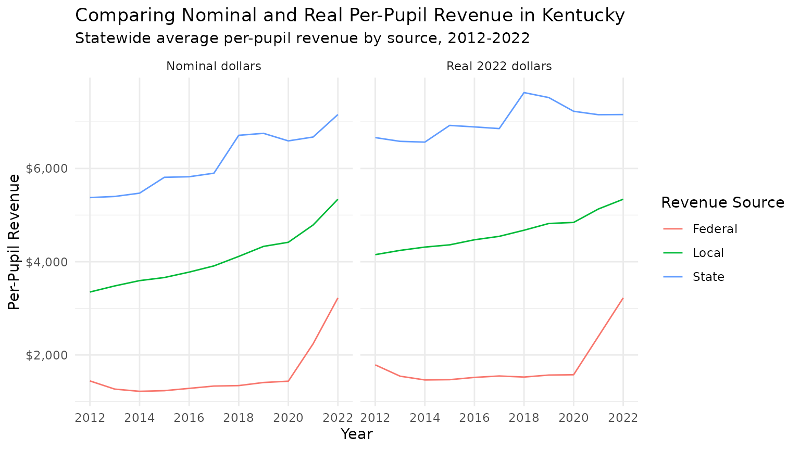

Introduction
When analyzing education finance data across multiple years,
adjusting for inflation can help produce more meaningful comparisons.
edfinr provides built-in functionality to adjust all
dollar-denominated values for inflation using the Consumer Price Index
for All Urban Consumers (CPI-U).
Understanding Nominal vs. Real Dollars
By default, all financial data returned by
get_finance_data() is in nominal dollars -
the actual dollar amounts reported in each year without any inflation
adjustment. This means that $1,000 in 2012 and $1,000 in 2022 are
treated as equal amounts, even though they have different purchasing
power.
To make valid comparisons across years, you need to convert to real dollars (also called constant dollars) by adjusting for inflation.
How CPI Adjustment Works
edfinr uses the CPI-U index to adjust for inflation. The
adjustment is aligned to the school year calendar:
- Each school year’s CPI is calculated by averaging:
- The second half of the first calendar year (July-December)
- The first half of the second calendar year (January-June)
For example, the 2021-22 school year CPI combines: - July-December 2021 (HALF2 2021) - January-June 2022 (HALF1 2022)
Using the cpi_adj Parameter
The get_finance_data() function includes a
cpi_adj parameter to automatically adjust all dollar
values:
# Get nominal (unadjusted) data - this is the default
nominal_data <- get_finance_data(yr = "2015:2022", geo = "KY")
# View the nominal revenue for a specific district
nominal_data |>
filter(dist_name == "Jefferson County") |>
select(year, dist_name, rev_total, rev_total_pp)## # A tibble: 8 × 4
## year dist_name rev_total rev_total_pp
## <chr> <chr> <dbl> <dbl>
## 1 2015 Jefferson County 1273807000 12662.
## 2 2016 Jefferson County 1305189000 12951.
## 3 2017 Jefferson County 1330902000 13334.
## 4 2018 Jefferson County 1456303000 14740.
## 5 2019 Jefferson County 1471098000 15021.
## 6 2020 Jefferson County 1483158000 14780.
## 7 2021 Jefferson County 1581097000 16485.
## 8 2022 Jefferson County 1987477000 21055.
# Get data adjusted to 2022 dollars
real_2022_data <- get_finance_data(yr = "2015:2022", geo = "KY", cpi_adj = 2022)
# View the same district with inflation-adjusted values
real_2022_data |>
filter(dist_name == "Jefferson County") |>
select(year, dist_name, rev_total, rev_total_pp)## # A tibble: 8 × 4
## year dist_name rev_total rev_total_pp
## <chr> <chr> <dbl> <dbl>
## 1 2015 Jefferson County 1517875324. 15088.
## 2 2016 Jefferson County 1544846270. 15329.
## 3 2017 Jefferson County 1546827044. 15497.
## 4 2018 Jefferson County 1655263268. 16754.
## 5 2019 Jefferson County 1638128758. 16727.
## 6 2020 Jefferson County 1626123061. 16205.
## 7 2021 Jefferson County 1694501365. 17667.
## 8 2022 Jefferson County 1987477000 21055.What Gets Adjusted?
When you use cpi_adj, the following variables are
automatically adjusted for inflation:
- All revenue variables (total, local, state, federal)
- All expenditure variables
- Median household income
- Median property values
Variables that are NOT adjusted include: - Enrollment counts - Demographic percentages - Any ratio or percentage variables
Working with the CPI Index
Every dataset includes a cpi_sy12 column that shows the
CPI index relative to the 2011-12 school year:
# Examine the CPI index values
cpi_values <- get_finance_data(yr = "all", geo = "KY") |>
select(year, cpi_sy12) |>
distinct() |>
arrange(year)
print(cpi_values)## # A tibble: 11 × 2
## year cpi_sy12
## <chr> <dbl>
## 1 2012 1
## 2 2013 1.02
## 3 2014 1.03
## 4 2015 1.04
## 5 2016 1.05
## 6 2017 1.07
## 7 2018 1.09
## 8 2019 1.11
## 9 2020 1.13
## 10 2021 1.16
## 11 2022 1.24
# Calculate cumulative inflation since 2012
cpi_values |>
mutate(
inflation_since_2012 = (cpi_sy12 - 1) * 100,
inflation_label = paste0(round(inflation_since_2012, 1), "%")
)## # A tibble: 11 × 4
## year cpi_sy12 inflation_since_2012 inflation_label
## <chr> <dbl> <dbl> <chr>
## 1 2012 1 0 0%
## 2 2013 1.02 1.66 1.7%
## 3 2014 1.03 3.25 3.3%
## 4 2015 1.04 4.00 4%
## 5 2016 1.05 4.71 4.7%
## 6 2017 1.07 6.63 6.6%
## 7 2018 1.09 9.04 9%
## 8 2019 1.11 11.3 11.3%
## 9 2020 1.13 13.0 13%
## 10 2021 1.16 15.6 15.6%
## 11 2022 1.24 23.9 23.9%Practical Example: Tracking Real Spending Over Time
Here’s how to analyze whether education revenue has kept pace with inflation:
# get multi-year data in nominal dollars
ky_nominal <- get_finance_data(yr = "all", geo = "KY", cpi_adj = "none") |>
mutate(type = "Nominal dollars")
# get multi-year data adjusted to 2022 dollars
ky_real <- get_finance_data(yr = "all", geo = "KY", cpi_adj = "2022") |>
mutate(type = "Real 2022 dollars")
# join data
ky_data <- bind_rows(ky_nominal, ky_real)
# calculate statewide per-pupil revenue trends for real dollars
rev_trends <- ky_data |>
group_by(type, year) |>
summarize(
rev_local = sum(rev_local, na.rm = TRUE),
rev_state = sum(rev_state, na.rm = TRUE),
rev_fed = sum(rev_fed, na.rm = TRUE),
enroll = sum(enroll, na.rm = TRUE)
) |>
mutate(
rev_local_pp = rev_local / enroll,
rev_state_pp = rev_state / enroll,
rev_fed_pp = rev_fed / enroll
) |>
select(type, year, rev_local_pp:rev_fed_pp) |>
pivot_longer(
cols = rev_local_pp:rev_fed_pp,
names_to = "var", values_to = "val") |>
mutate(
var = stringr::str_remove_all(var, "rev_"),
var = stringr::str_remove_all(var, "_pp"),
var = stringr::str_to_title(var),
var = str_replace_all(var, "Fed", "Federal")
)
# plot trends
ggplot(rev_trends) +
geom_line(
aes(x = year, y = val, color = var, group = var)
) +
facet_wrap(~type) +
scale_x_discrete(breaks = c("2012", "2014", "2016", "2018", "2020", "2022")) +
scale_y_continuous(labels = scales::dollar) +
labs(
title = "Comparing Nominal and Real Per-Pupil Revenue in Kentucky",
subtitle = "Statewide average per-pupil revenue by source, 2012-2022",
x = "Year",
y = "Per-Pupil Revenue",
color = "Revenue Source"
) +
theme_minimal()
Choosing a Base Year
You can adjust to any year from 2012 to 2022. Common choices include:
- Most recent year (e.g., 2022): Shows all values in current dollar terms
- First year of analysis: Makes it easy to see percentage changes from baseline
- Midpoint year: Minimizes the size of adjustments across the time series
# select ky district to assess
district_sample <- "Jefferson County"
# get data with nominal dollars and cpi-adjusted for different base years
nominal <- get_finance_data(yr = "2012:2022", geo = "KY") |>
filter(dist_name == district_sample) |>
select(year, rev_total_pp) |>
mutate(type = "Nominal")
adjusted_2012 <- get_finance_data(yr = "2012:2022", geo = "KY", cpi_adj = 2012) |>
filter(dist_name == district_sample) |>
select(year, rev_total_pp) |>
mutate(type = "2012 Dollars")
adjusted_2022 <- get_finance_data(yr = "2012:2022", geo = "KY", cpi_adj = 2022) |>
filter(dist_name == district_sample) |>
select(year, rev_total_pp) |>
mutate(type = "2022 Dollars")
# join and plot data
bind_rows(nominal, adjusted_2012, adjusted_2022) |>
ggplot(aes(x = year, y = rev_total_pp, color = type, group = type)) +
geom_line(size = 1.2) +
scale_y_continuous(labels = scales::dollar) +
labs(
title = paste("Per-Pupil Revenue:", district_sample),
x = "Year",
y = "Revenue per Pupil",
color = "CPI Adjustment"
) +
theme_minimal()
Best Practices
Always use inflation adjustment for multi-year analyses: Comparing nominal dollars across years can be misleading
Be consistent with your base year: Use the same
cpi_adjvalue for all data in an analysisDocument your choice: Always note whether values are nominal or real, and which base year you used
Consider your audience: Current dollars (most recent year) are often most intuitive for general audiences